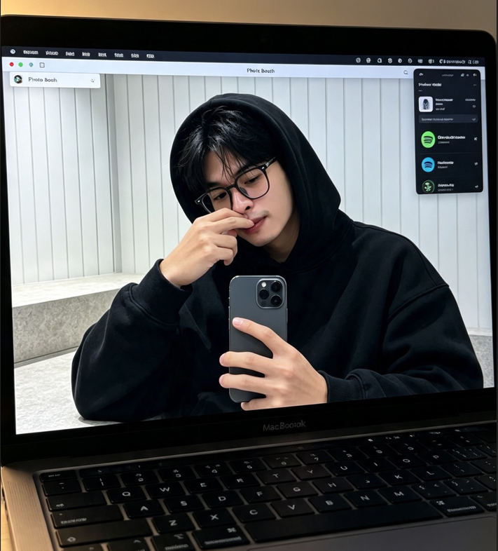
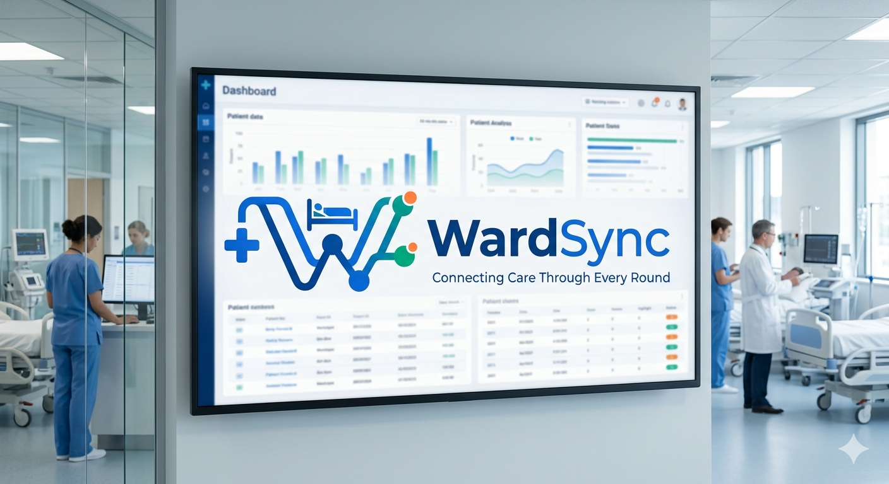
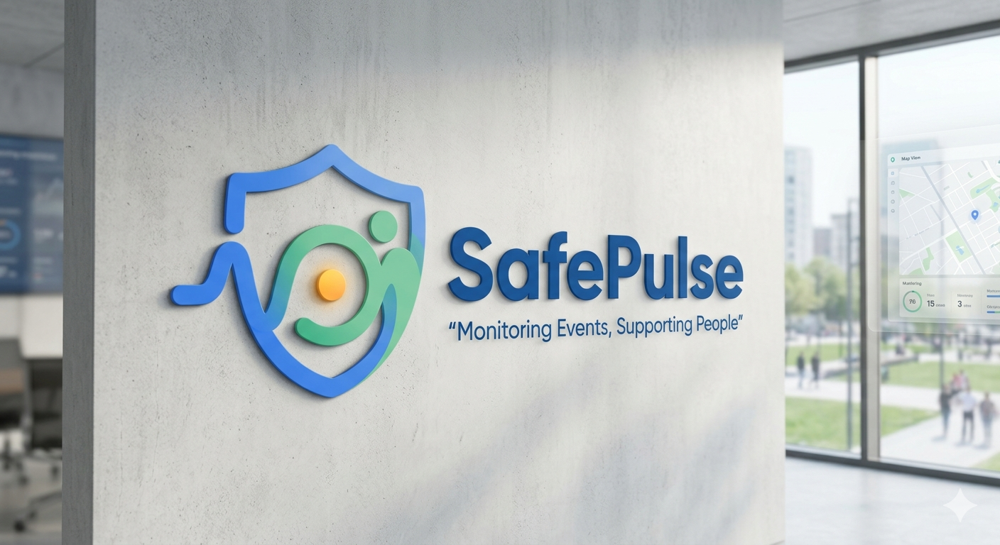
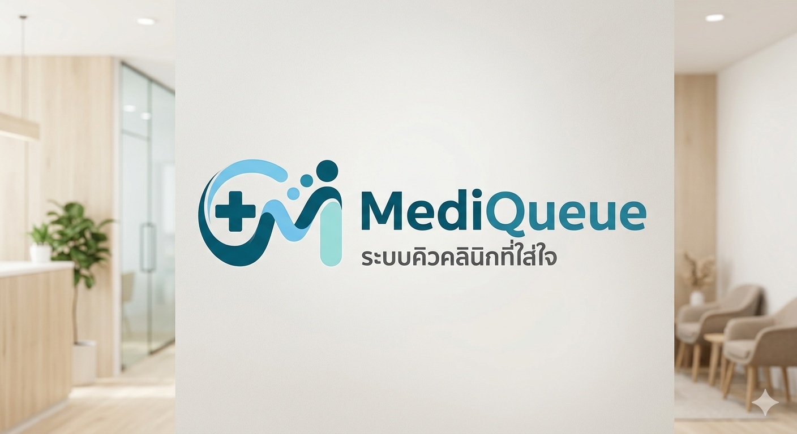
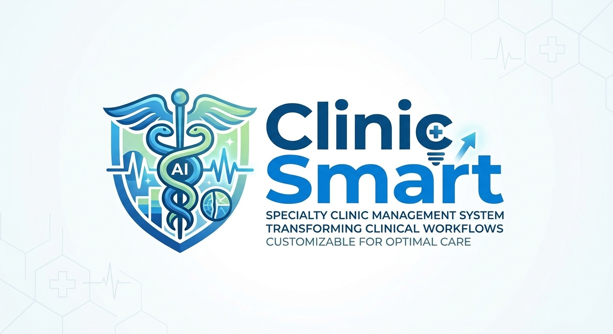

Discover Digital
Experiences and
Collect Impact
เราเปลี่ยนความซับซ้อนให้กลายเป็นความเรียบง่าย ด้วยการออกแบบที่เน้นผู้ใช้งานเป็นศูนย์กลาง พร้อมความเข้าใจในฝั่ง Code เพื่อการทำงานร่วมกันที่ไร้รอยต่อ
.png)
Hospital & Enterprise Web
In-depth User Research
Cross-functional team



Hot Trending On This Year

WardSync Platform
ระบบศูนย์กลางการดูแลผู้ป่วยในสำหรับแพทย์ พยาบาล และเภสัชกร ลดขั้นตอนเอกสารและเพิ่มความแม่นยำในการรักษา

SafePulse System
ระบบตรวจจับสัญญาณชีพฉุกเฉินและแจ้งเตือนวิกฤตแบบเรียลไทม์ พร้อมแดชบอร์ดติดตามสถานะผู้ป่วยอย่างใกล้ชิด

MediQueue Application
แพลตฟอร์มบริหารจัดการคิวและนัดหมายผู้ป่วยนอก ลดเวลารอคอยในโรงพยาบาลได้มากกว่า 45%
Doctor Copilot AI
ผู้ช่วยสรุปประวัติและบันทึกการรักษาด้วย AI อัจฉริยะ ออกแบบ UI เพื่อความโปร่งใสและตรวจสอบข้อมูลได้ง่าย
ด้านที่เชี่ยวชาญเป็นพิเศษ
ระบบ EMR และคลินิกทางการแพทย์
ออกแบบ UX ลดความผิดพลาดของข้อมูลทางการแพทย์ ถูกต้องตามมาตรฐานความปลอดภัย และใช้งานง่ายสำหรับบุคลากรด่านหน้า
เวิร์กโฟลว์ CRM และศูนย์รวมการขาย
ระบบจัดการไปป์ไลน์ที่ครอบคลุม B2B ลดการทำงานซ้ำซ้อนด้วยระบบอัตโนมัติที่แม่นยำ
ระบบดีไซน์และสถาปัตยกรรมโค้ด
สร้างไลบรารี Figma ที่เชื่อมโยงกับโค้ด React เพื่อความสม่ำเสมอและส่งมอบงานการพัฒนาได้อย่างรวดเร็ว
UX & User Research
การสำรวจความต้องการของผู้ใช้จริง (Persona, Empathy Mapping, User Journey) เพื่อค้นหาจุด Pain Point และแก้ปัญหาได้ตรงจุด
Design Systems & UI
สร้างส่วนประกอบ UI ที่มีมาตรฐาน รองรับ Accessibility (WCAG 2.1) พร้อมโครงสร้าง Token ที่เชื่อมต่อกับ CSS / Tailwind ได้โดยตรง

มีโปรเจกต์ที่อยากพัฒนาร่วมกันไหม?
พร้อมให้คำปรึกษาด้านการวิจัย การออกแบบประสบการณ์ผู้ใช้ และการพัฒนาสถาปัตยกรรมระบบดิจิทัลสำหรับองค์กรชั้นนำ